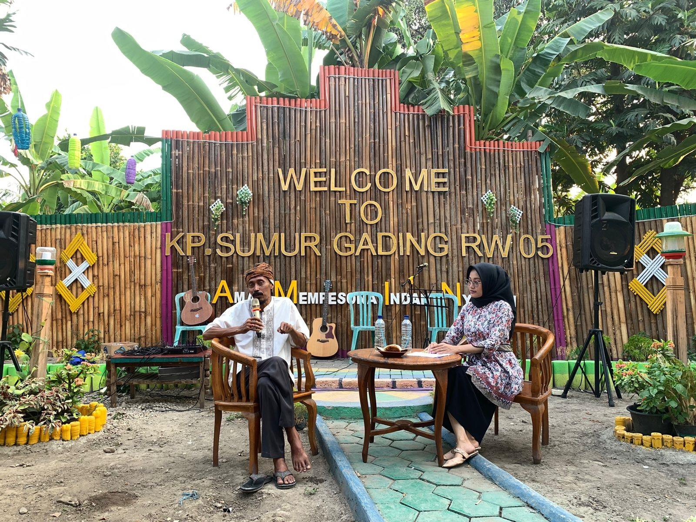

Profil Kp. Sumur Gading

Kampung Sumur Gading adalah salah satu kampung yang terletak di Kecamatan Bojonegara, Kabupaten Serang, Banten. Kampung ini dikenal dengan keindahan alamnya dan keragaman budayanya.
Di kampung ini, masyarakatnya sangat menjunjung tinggi nilai-nilai gotong royong dan saling membantu dalam berbagai kegiatan. Kami memiliki tradisi tahunan yang menjadi daya tarik wisata budaya bagi pengunjung.
Luas Wilayah
±50 Hektar
Jumlah Penduduk
±3.000 Jiwa
RW
05
RT
9, 10, 11
Layanan Publik
Pendidikan
- PAUD & TK IT Edelweis
- MDA Al-Khairiyah Margagiri
- MTs.S Al-Khairiyah Margagiri
Kesehatan
- Klinik Bidan Sri Ernawati
- Klinik Rahima
Fasilitas Umum
- Masjid Al-Fudhola
- Taman Amin OPCK